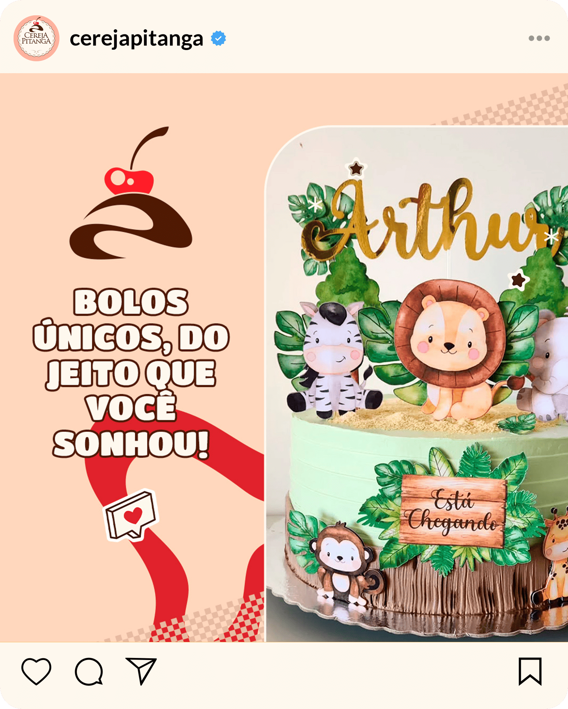
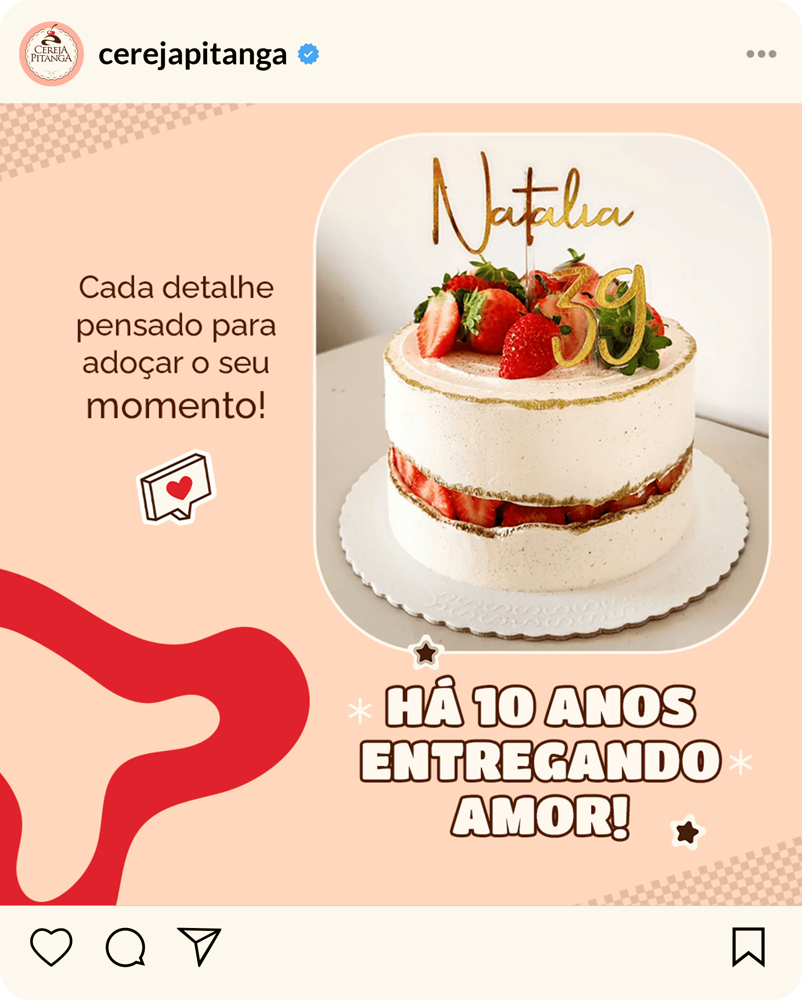
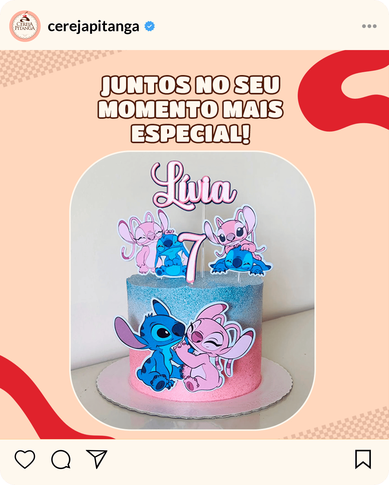
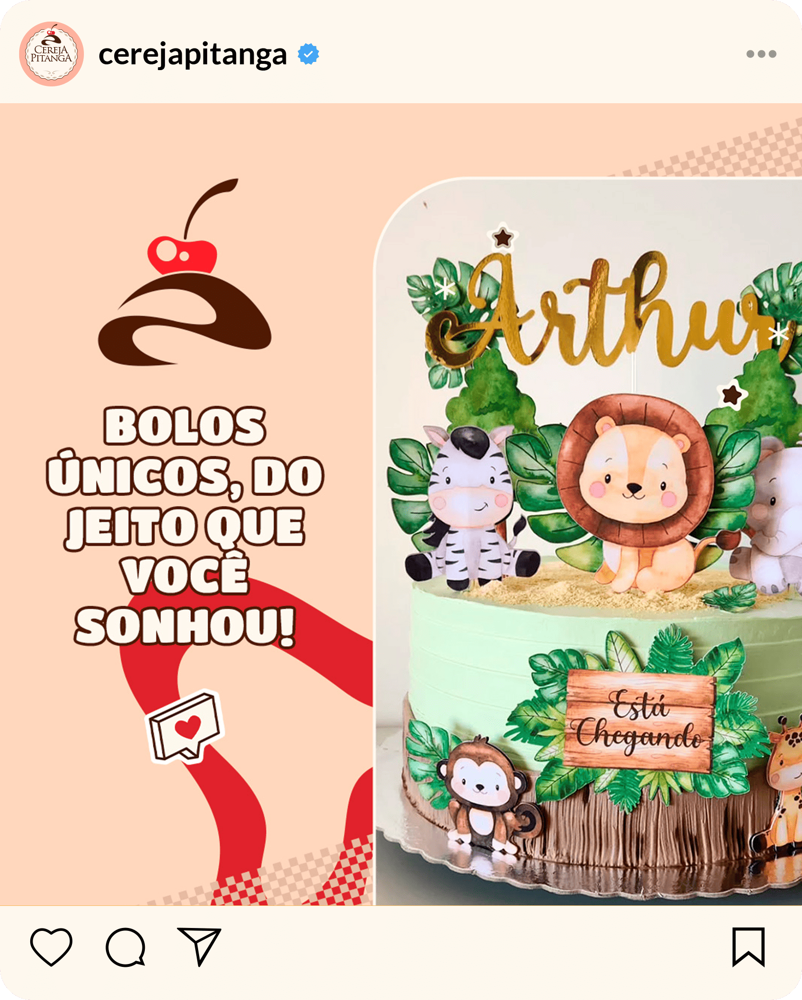
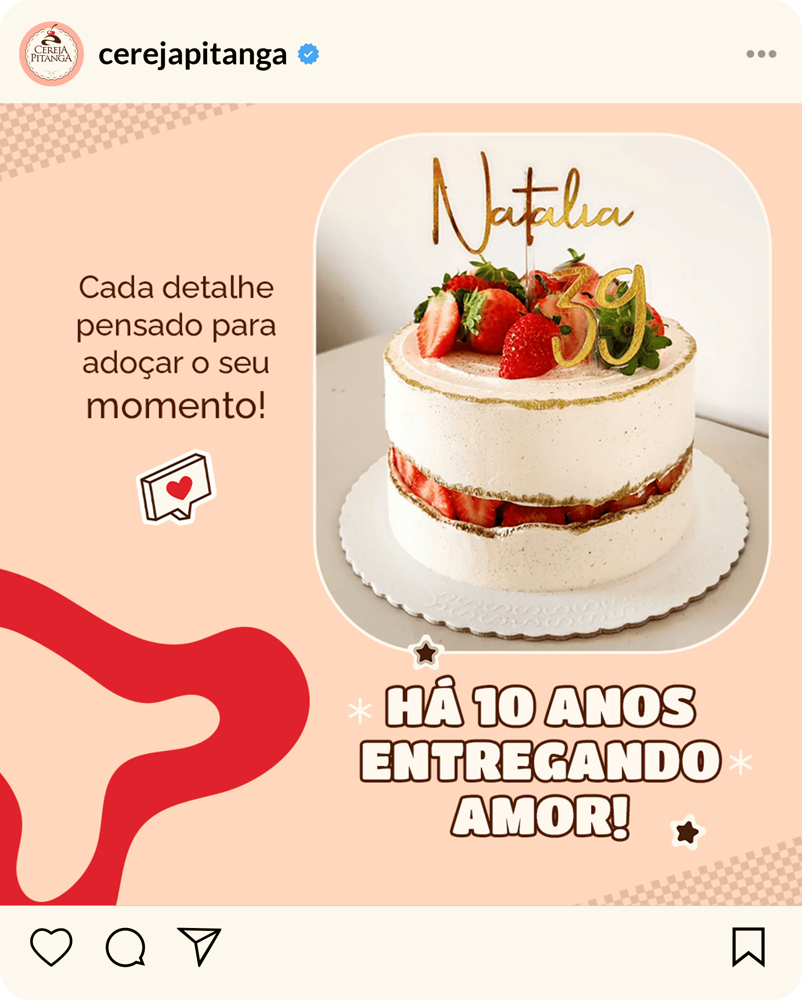
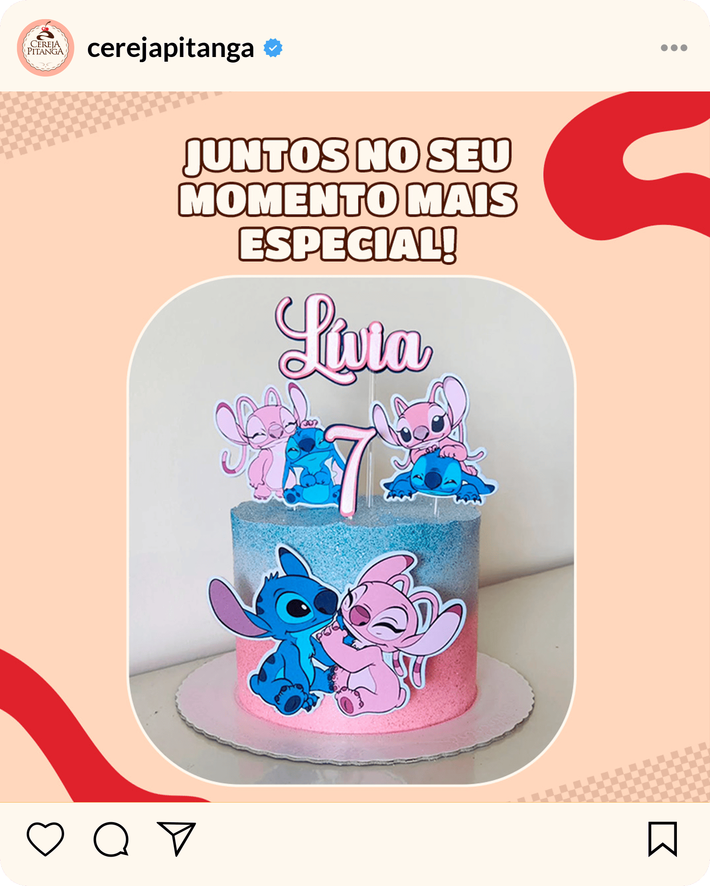

Cereja Pitanga
Details
Transforming the way customers perceive a brand is an exciting challenge, especially when it comes to a confectionery that stands out for selling custom cakes.
The goal of this project was to develop a visual identity that conveyed the essence of the brand: sweetness, creativity, and exclusivity. The process was divided into carefully planned stages:
- Planning and Research: Understanding the target audience, defining the brand positioning, and studying visual trends in the confectionery market.
- Creating Visual Identity: Developing a memorable logo, choosing a color palette that evokes sophistication and coziness, and selecting modern and elegant fonts to compose the brand's communication.
- Promotional Materials Design: Creating personalized packaging, thank-you cards, and digital banners that reinforce the bakery's positioning as a reference in custom cakes.
- Digital Presence: Integrating the visual identity into social media and the bakery's website, with consistent graphic elements that ensure harmonious and attractive communication.
The result was a visual identity that not only reflects the care and exclusivity of the offered products but also delights customers from the first visual contact, strengthening the bakery's market presence and attracting new clients aligned with the brand's concept.
Moreover, the project demonstrated the ability to adapt to the social media environment, creating an online presence that reflects the brand's visual identity. With harmonious and attractive visual communication, the bakery managed to capture the interest and trust of its customers, becoming a valuable reference in the confectionery market.
 



Get in Touch!
Did you like my Portfolio? If you have a project in mind or an idea to discuss, feel free to get in touch.